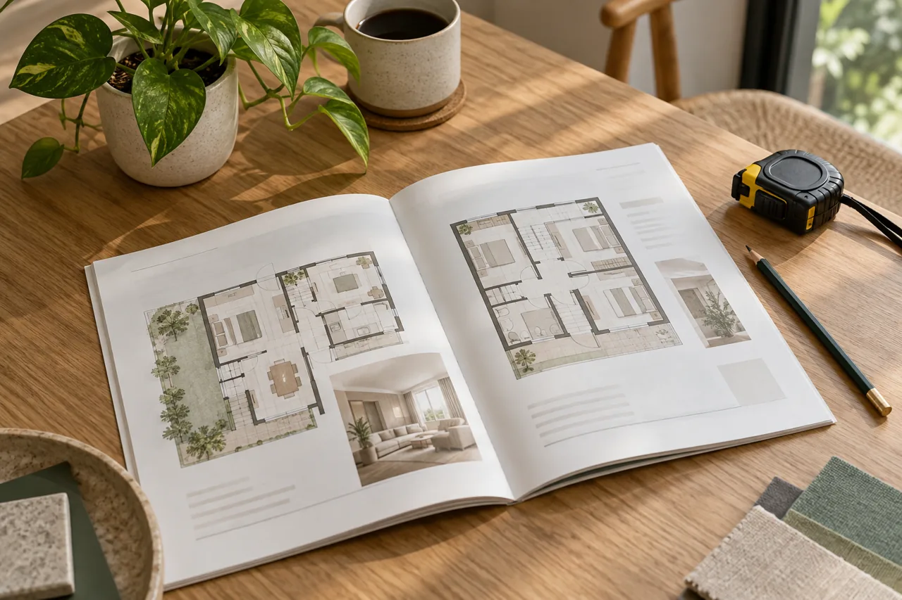

LAYOUTS · DAILY LIFE · NEW PROJECTS
New-Project Freebies in JB: What Actually Helps You Move In?
Esther · Real Estate Negotiator · Checked 2026-11-02
A useful inclusion is something you need, with suitable specifications, that is genuinely included on acceptable terms. List essential move-in items first, then check the written package. Adding up advertised gift values does not establish real savings.
Browse this guide
List what you need in the first week
Separate essentials, purchases that can wait and items you do not need. Beds, storage, lighting, cooking equipment and a work desk have different priorities for different households.
A kitchen appliance may matter less to someone who rarely cooks than a usable work area. These are planning examples, not statements that any current development supplies particular items.
Ask what the package actually contains
Check models, quantities, installation, warranty and delivery arrangements. If substitutions are allowed, ask how they are handled. Rendering images and verbal descriptions do not replace the written list for the actual unit.
Labels such as partly furnished or fully equipped need detail. Ask about the items you rely on rather than interpreting a marketing phrase as a promise that everything needed to live there is included.
Compare avoided spending, not headline value
Identify suitable items you would otherwise buy and check genuinely comparable current purchase and installation costs. Different models and service scopes are not interchangeable. This article assigns no invented retail value.
If a package is tied to a price, payment arrangement, financing or another condition, assess the whole transaction. Free does not mean unconditional, and it does not establish that the home is cheaper overall.

Check the gap between delivery and living there
Confirm handover condition, inspection, furnishing delivery, cleaning and moving arrangements. Included items may not all be ready when keys are handed over; verify the relevant written schedule.
For any fee concession, establish the precise fee, who pays it and what limits apply. Tax treatment, financing approval and contract conditions should not be bundled into an unqualified “all included” promise.
Use the same checklist for every shortlist
Ask Esther to organise included items, missing items, conditions and additional purchases side by side for the units being compared. The home must fit first; the package is a separate decision.
Current availability, package validity and viewing arrangements require confirmation. An expiring promotional message should not replace a proper check of the home.

Frequently asked questions
Are more freebies always better?
No. Relevance, actual specifications, conditions and total transaction cost matter.
Is the show-unit furniture included?
Do not assume so. Verify the written specification for the unit offered.
Can inclusions be exchanged for cash?
That depends on the specific project’s current written policy; it cannot be promised in advance.
Compare new-project packages against your move-in list
Tell me your intended use, occupants and preferred layout. I focus on helping buyers compare relevant new-project information; current stock, specifications and appointments need confirmation.
Ask Esther on WhatsApp ↗WhatsApp: 011-3144 9616
You can edit the message before sending. Clicking does not send it or confirm an appointment.Sources and scope
Checked 2 November 2026. Practical comparisons and hypothetical situations are editorial analysis, not measured market findings. Sources support only the facts described below.
- KPKT — TEDUH housing information portal — A housing-information lookup resource, not proof of a particular layout or sales package.
No current project price, financing approval, rental outcome or appreciation is promised. Specific sales terms and permitted use require verification.